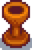
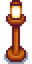
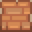
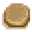
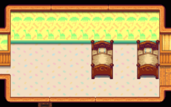
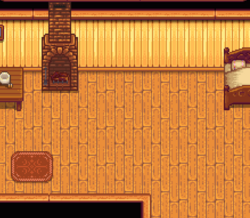
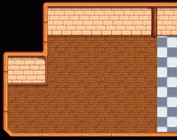
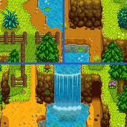

Столярная мастерская
| Столярная мастерская | |
 | |
 | |
| Часы работы: | 9:00—17:00 |
| Выходной: | Вторник, в пятницу закрывается в 16:00 |
| Обитатели: | |
Столярная мастерская расположена в горах к северу от города Пеликан. Магазином управляет городской плотник Робин. Мастерская находится в доме, где она живет вместе с Деметриусом, Мару и Себастианом. Мастерская работает с 9:00 до 17:00.
Робин продает древесину, камень, мебель и может расширить ваш дом, а также построить на ферме новые здания. Она покупает строительные материалы[1]: древесину, твердую древесину, камень, волокна и глину. Работу над зданиями и их расширениями она начинает на следующий день после оплаты, но в праздничные дни она не работает. Большинство зданий она заканчивает за два дня. В период проведения работ она может быть недоступна для диалогов и подарков.
Режим работы
В дом можно войти с 9:00 до 20:00 каждый день, даже если магазин уже закрыт.
Магазин закрыт по вторникам, когда Робин отправляется в магазин Пьера на занятия аэробикой с Кэролайн, Джоди, Эмили и Марни. По пути в 9:40 она проходит мимо своего прилавка. Если вы придете к этому времени и нажмете на прилавок, вы сможете у неё что-нибудь купить.
По пятницам магазин закрывается в 16:00, когда Робин и Деметриус идут в салун. Если зайти в магазин до 16:00, но не успеть до конца работы, можно нажать на прилавок, когда Робин проходит мимо, как и по вторникам.
В четверг, 18 лета мастерская всегда закрыта, так как Робин уходит в клинику Харви. Кроме того, мастерская закрыта по праздникам. Если в праздничный день она должна работать на вашей ферме, она не придёт, и здание будет строиться на день дольше.
Когда она занята на ферме, мастерская весь день закрыта.
Ассортимент
У Робин есть постоянный ассортимент, а также набор предметов интерьера, который ежедневно меняется.
Постоянный ассортимент
Цена древесины и камня у Робин увеличивается со второго года игры. 1 числа весны второго года игрок получит письмо о том, что цена сырья в магазине Робин и в магазине Клинта повысилась. Цена, по которой вы продаете древесину и камень Робин или через ящик для отгрузок, не изменяется.
| Вид | Название | Описание | Цена |
|---|---|---|---|
| Древесина | Прочный, но гибкий материал со множеством применений. | Год 1: Год 2+: | |
| Камень | Распространенный материал со множеством применений. | Год 1: Год 2+: | |
| Простое окно | Можно поставить в доме. | ||
| Маленькое окно | Можно поставить в доме. | ||
| Календарь | Можно поставить в доме. | ||
| Верстак | Позволяет пользоваться материалами из расположенных рядом сундуков. | ||
| Дробилка | Делает из одного куска твердой древесины обычную. (Доступна после получения письма зимой) |
||
| Маленький холодильник | Позволяет хранить дополнительные ингредиенты для готовки. | ||
| Телефон | Можно проверять время работы и ассортимент магазинов. | ||
| Напольный телевизор | Можно поставить в доме. | ||
| Дешевый телевизор | Можно поставить в доме. | ||
| Плазменный телевизор | Можно поставить в доме. (Доступен после первого улучшения дома) |
||
| Каталог мебели | Предоставляет неограниченный доступ почти ко всем видам мебели... прямо у вас дома! (Доступен после первого улучшения дома) |
||
| Сезонное растение | Декоративное растение. Меняется с каждым временем года. И поливать не нужно. | ||
| Обычное бревно | Украшение для вашей фермы. | ||
| Кусок бревна | Украшение для вашей фермы. | ||
| Кирпичный камин | Можно поставить в доме. | ||
| Каменный камин | Можно поставить в доме. | ||
| Печной камин | Можно поставить в доме. | ||
| Элитная двуспальная кровать | Эту мебель нельзя ставить на улицу. (Доступна после особого задания "Проект Робин" | ||
| Кровать | Эту мебель нельзя ставить на улицу. | ||
| Двуспальная кровать | Эту мебель нельзя ставить на улицу. | ||
| Детская кроватка | Эту мебель нельзя ставить на улицу. | ||
| Деревянный светильник (Рецепт) | Чертежи для изготовления: Деревянный светильник. | ||
| Каменный светильник (Рецепт) | Чертежи для изготовления: Каменный светильник. (Доступен после изучения Деревянный светильник (Рецепт)) |
||
| Бочка-светильник (Рецепт) | Чертежи для изготовления: Бочка-светильник. (Доступен после изучения Каменный светильник (Рецепт)) |
||
| Пень-светильник (Рецепт) | Чертежи для изготовления: Пень-светильник. (Доступен после изучения Бочка-светильник (Рецепт)) |
||
| Золотой светильник (Рецепт) | Чертежи для изготовления: Золотой светильник. (Доступен после изучения Пень-светильник (Рецепт)) |
||
 |
Резной светильник (Рецепт) | Чертежи для изготовления: Резной светильник. (Доступен после изучения Золотой светильник (Рецепт)) |
|
| Светильник-череп (Рецепт) | Чертежи для изготовления: Светильник-череп. (Доступен после изучения Резной светильник (Рецепт)) |
||
| Мраморный светильник (Рецепт) | Чертежи для изготовления: Мраморный светильник. (Доступен после изучения Светильник-череп (Рецепт)) |
||
 |
Деревянный фонарь (Рецепт) | Чертежи для изготовления: Деревянный фонарь. | |
| Железный фонарь (Рецепт) | Чертежи для изготовления: Железный фонарь. | ||
| Деревянное покрытие (Рецепт) | Чертежи для изготовления: Деревянное покрытие. | ||
| Каменное покрытие (Рецепт) | Чертежи для изготовления: Каменное покрытие. | ||
 |
Кирпичный покрытие (Рецепт) | Чертежи для изготовления: Кирпичный покрытие | |
 |
Дорожка из крупных камней (Рецепт) | Чертежи для изготовления: Дорожка из крупных камней. | |
| Соломенное покрытие (Рецепт) | Чертежи для изготовления: Соломенное покрытие. | ||
| Дорожка из кристаллов (Рецепт) | Чертежи для изготовления: Дорожка из кристаллов. | ||
| Большой сундук (Рецепт) | Чертежи для изготовления: Большой сундук |
Ежедневный ассортимент
- Смотрите также: Мебель
Ниже разворачивающаяся таблица со списком предметов, которые могут появиться у Робин в продаже.
Постройки для фермы
- Магические здания смотрите в статье Башня волшебника
Фермерские здания выполняют различные функции. Некоторые здания необходимы для разведения животных. Птичник и хлев можно улучшить, однако для этого сами здания нужно сначала построить.
Каждое здание можно строить сколько угодно раз, пока на ферме хватает для него места. Домики и ящики для отправки строятся мгновенно; на строительство хлева и птичника нужно по три дня; строительство остальных фермерских зданий занимает два дня.
В столярной мастерской можно двигать уже существующие здания. Перемещение происходит мгновенно и ничего не стоит. Здание перемещается со всеми предметами и животными внутри, его не надо освобождать перед перемещением.
Совет: рекомендуется построить силосную башню первой, чтобы заранее запастись сеном для кормления животных.
Баг: начиная с v1.3, здания нельзя строить и перемещать так, чтобы их нижняя стена касалась клетки с покрытием, дорожкой или деревом.
| Вид | Название | Описание | Обитатели | Стоимость | Размер | Время строительства |
|---|---|---|---|---|---|---|
 |
Хлев | Вмещает до 4 животных, пригодных для содержания в хлеву. | Коровы | 4x7 |
3 дня | |
 |
Большой хлев | Вмещает до 8 животных, пригодных для содержания в хлеву. Животные внутри смогут рожать. Позволяет разводить коз. | Козы | 4x7 |
2 дня | |
 |
Элитный хлев | Вмещает до 12 животных, пригодных для содержания в хлеву. Включает в себя автоматическую систему подачи корма. Позволяет разводить овец и свиней. | Овцы | 4x7 |
2 дня | |
 |
Птичник | Вмещает до 4 животных, пригодных для содержания в птичнике. | Курицы | 3x6 |
3 дня | |
 |
Большой птичник | Вмещает до 8 животных, пригодных для содержания в птичнике. Включает в себя инкубатор. Позволяет разводить динозавров и уток. | Утки | 3x6 |
2 дня | |
 |
Элитный птичник | Вмещает до 12 животных, пригодных для содержания в птичнике. Включает в себя автоматическую систему подачи корма. Позволяет разводить кроликов. | Кролики | 3x6 |
2 дня | |
| Рыбный пруд | Разводите рыб и собирайте их продукцию. Со временем рыбы в пруду становится больше. | Рыба | 5x5 |
2 дня | ||
 |
Мельница | Здесь можно перемолоть пшеницу, свеклу и рис. | 4x2 |
2 дня | ||
 |
Сарай | Пустое здание. Его можно заполнить чем угодно! Интерьер можно украсить. | 7x3 |
2 дня | ||
 |
Большой сарай | В два раза больше обычного сарая. Интерьер можно декорировать. | 7x3 |
2 дня | ||
 |
Силосная башня | Здесь можно хранить скошенную траву на корм животным. | 3x3 |
2 дня | ||
 |
Вольер для слаймов | Позволяет держать до 20 слаймов. При полных поилках слаймы будут производить шарики слизи. | Слаймы | 6x11 |
2 дня | |
 |
Стойло | Лошадь прилагается. | Лошадь | 4x2 |
2 дня | |
 |
Колодец | Здесь можно наполнить лейку. | 3x3 |
2 дня | ||
 |
Домик | Дом для друга! Субсидии предоставлены сельскохозяйственным фондом города. | 1 игрок в совместной игре. | 5x3 |
Мгновенно | |
 |
Ящик для отгрузки | Полижите внутрь предметы и ночью они будут проданы. | 2x1 |
Мгновенно | ||
 |
Миска | Необходимый минимум для содержания одного питомца. | 1 кот, собака, или черепаха. | 2x2 |
Мгновенно |
Расширения дома
После расширения дома размер самого здания в клетках не изменяется.
Расширения увеличивают внутреннюю площадь дома, а также добавляют кухню для готовки.
| Вид | Название | Описание | Стоимость |
|---|---|---|---|
| Расширение 1 | Увеличивает площадь и добавляет кухню. | ||
| Расширение 2 | Добавляет две новые комнаты, одна из которых детская. Увеличивает кухню и спальню. | ||
.png/72px-House_(tier_3).png) |
Расширение 3 | Добавляет подвал под домом. В подвале стоят бочки, в которых можно выдерживать некоторые продукты (сыр, козий сыр, пиво, медовуху, светлый эль и вино) для повышения их качества и стоимости. |
Косметический ремонт дома
После второго расширения дома появляется возможность поменять его планировку. Все изменения бесплатны, применяются мгновенно и могут быть отменены.
| Название | Вид | Описание | Подробности | Цена |
|---|---|---|---|---|
| Удалить колыбель |  | Удаляет колыбель в вашем доме. | Удаляет кроватку, необходимую для рождения детей. | Бесплатно |
| Открытая спальня |  | Убирает стену между спальней и прихожей. | Это улучшение добавляет 12 свободных клеток пространства в доме. | |
| Добавить южную комнату | 
|
Добавляет комнату у югу от вашей спальни. | Размер комнаты 11×7. | |
| Добавить угловую комнату | 
|
Добавляет комнату в северо-восточной части вашего дома. | Размер комнаты 9×5. | |
| Добавить столовую | 
|
Добавляет большую комнату слева от кухни. | Размер комнаты 9×10 + 4×5. | |
| Добавить кладовую | 
|
Добавляет маленькую кладовую справа от входной двери. | Просто ниша; размер 4x5. | |
| Добавить чердак | 
|
Добавляет этаж в виде комнаты в верхней части дома. | Размер комнаты 13×5. | |
| Расширить угловую комнату | 
|
Увеличивает угловую комнату. | Итоговый размер комнаты 8×13 + 4×5. Также увеличивает размер исходной угловой комнаты с 9×5 до 10×5. |
|
| Открытая столовая |  | Убирает стену между кухней и столовой. | Это улучшение добавляет 12 свободных клеток пространства в доме. |
Покраска
Дом, стойло и некоторые хозяйственные постройки можно покрасить в столярной мастерской, выбрав «Красить здания» в меню строительства. Это действие применяется мгновенно и не требует ресурсов.
- Птичник, хлев, сарай и домики должны быть полностью улучшены, чтобы их можно было покрасить.
- До покупки последнего расширения, у дома можно красить только крышу.
Ниже показана область покраски. Можно выбрать любую комбинацию цветов «здания» (красный), «отделки» (фиолетовый) и «крыши» (зеленый).
Дом

Дом расширение 2

Дом расширение 3

Большой сарай

Элитный птичник

Элитный хлев

Стойло

Домик

Домик

Домик
Развитие сообщества
Фургон
- Смотрите также: Фургон
После последнего расширения дома и восстановления клуба (или покупки членства в ДжоджаМарте) у игроков появится возможность приобрести «Развитие сообщества» в столярной мастерской за  500 000 з. и 950 древесины. После оплаты Робин построит дом для Пэм (и Пенни, если она не в браке с игроком и не живёт на ферме). Обратите внимание, что в совместной игре «Развитие сообщества» может приобрести только хост.
500 000 з. и 950 древесины. После оплаты Робин построит дом для Пэм (и Пенни, если она не в браке с игроком и не живёт на ферме). Обратите внимание, что в совместной игре «Развитие сообщества» может приобрести только хост.
Короткий путь
После покупки дома для Пэм появится следующее улучшение - короткие пути за  300 000 з., которые позволят быстрее передвигаться по долине. Создание коротких путей занимает 3 дня.
300 000 з., которые позволят быстрее передвигаться по долине. Создание коротких путей занимает 3 дня.
- Проход между лесом (правее домика Леи) и пляжем. Там можно проехать на лошади.
- Проход в горах (левее моста в карьер) в город (севернее ДжоджаМарт). Там нельзя проехать на лошади.
- Проход в горах (вдоль забора к востоку от Столярной мастерской) в город (севернее ДжоджаМарт) - мост, по которому нельзя проехать на лошади.
- Проход в городе (южнее музея) на пляж (приливные бассейны). Позволяет попасть в приливные бассейны без постройки моста. Это узкая тропа, по которой нельзя проехать на лошади.
- Проход в глуши от тропинки к туннелю. Это лестница, по которой можно проехать на лошади.
- Мостик между островом в горах и гильдией искателей приключений. По нему нельзя проехать на лошади.
Ниже приведен список с изображениями долины до и после.
| Место | До | После |
|---|---|---|
| От домика Леи на пляж | 
|

|
| На северо-востоке города в горы | 
|
 |
| Южнее музея на пляж | 
|

|
| Лестница в глуши | 
|

|
| Мостик в горах | 
|

|
Галерея

Интерьер

Комната Себастьяна
Ссылки
История
- 1.0: Добавлена.
- 1.1: Добавлены мельница, сарай и третье расширение дома. Добавлена возможность двигать здания в меню строительства. В ассортимент добавлена новая мебель.
- 1.3: В меню строительства добавлены ящик для отправки, домики и «Развитие сообщества». Стоимость древесины и камня увеличена, начиная со второго года. В постоянный ассортимент добавлены сезонное растение, обычное бревно, кусок бревна, кирпичный камин, каменный камин и печной камин.
- 1.4: В меню строительства добавлены рыбный пруд и большой сарай. В постоянный ассортимент добавлены: верстак, дробилка, маленький холодильник и кирпичный покрытие (рецепт). Цены на комоды увеличены с
 1000 з. до 5000 з. (комод из красного дерева с 2000 з. до 7500 з.).
1000 з. до 5000 з. (комод из красного дерева с 2000 з. до 7500 з.). - 1.5: Добавлены косметический ремонт дома и следующее развитие сообщества. Добавлена покраска зданий на ферме. Добавлены телефон, кровать, двуспальная кровать, детская кроватка и элитная двуспальная кровать в ассортимент магазина. Теперь теплицу можно переместить после восстановления. Ящик для отгрузки можно перемещать или уничтожить. Уменьшена стоимость верстака с 3000 з. до 2000 з..
- 1.5.5: Здания теперь могут быть построены на местах для артефактов. Места для артефактов при этом будут удалены с карты.
- 1.6: Повышена цена второго улучшения дома с 50 000 з. до 65 000 з., но уменьшено требуемое количество твердой древесины со 150 до 100. Вольер для слаймов теперь имеет меньший размер: 7x4. Светильники теперь можно покупать в любом порядке. Постройка домиков больше не требует строительных материалов, только 100 з.. Большинство улучшений теперь не бесплатны. Добавлены новые варианты улучшений. Теперь можно строить миски для питомцев в магазине у Робин, доступны три варианта. Время строительства теперь отображается при постройке.
| Здания | ||
|---|---|---|
| Магазины | Башня волшебника • Гильдия искателей приключений • Дварф вулкана • ДжоджаМарт • Казино • Клиника Харви • Кузнец • Магазин мороженого • Магазин Пьера • Меняла • Оазис • Ореховая комната Мистера Ки • Островной торговец • Разрушенный дом • Ранчо Марни • Рыбацкий магазин • Салун «Звездная капля» • Столярная мастерская • Странствующая торговка | |
| Дома | Горный проезд, д. 24 • Домик на дереве • Домик Леи • Домик Эллиота • Ивовый переулок, д. 1 • Ивовый переулок, д. 2 • Палатка • Речной проезд, д. 1 • Речной проезд, д. 2 • Усадьба мэра • Фермерский дом • Фермерский дом на острове • Фургон | |
| Здания для фермы | Фермерство | Вольер для слаймов • Домик • Колодец • Мельница • Птичник • Рыбный пруд • Сарай • Силосная башня • Стойло • Теплица • Хлев |
| Особые | Домик Джунимо • Золотые часы • Обелиск воды • Обелиск земли • Обелиск острова • Обелиск пустыни • Фермерский обелиск | |
| Другие здания | Баня • Кинотеатр • Клуб • Музей • Островной полевой офис • Склад Джоджа • Собачья конура • Хижина ведьмы | |